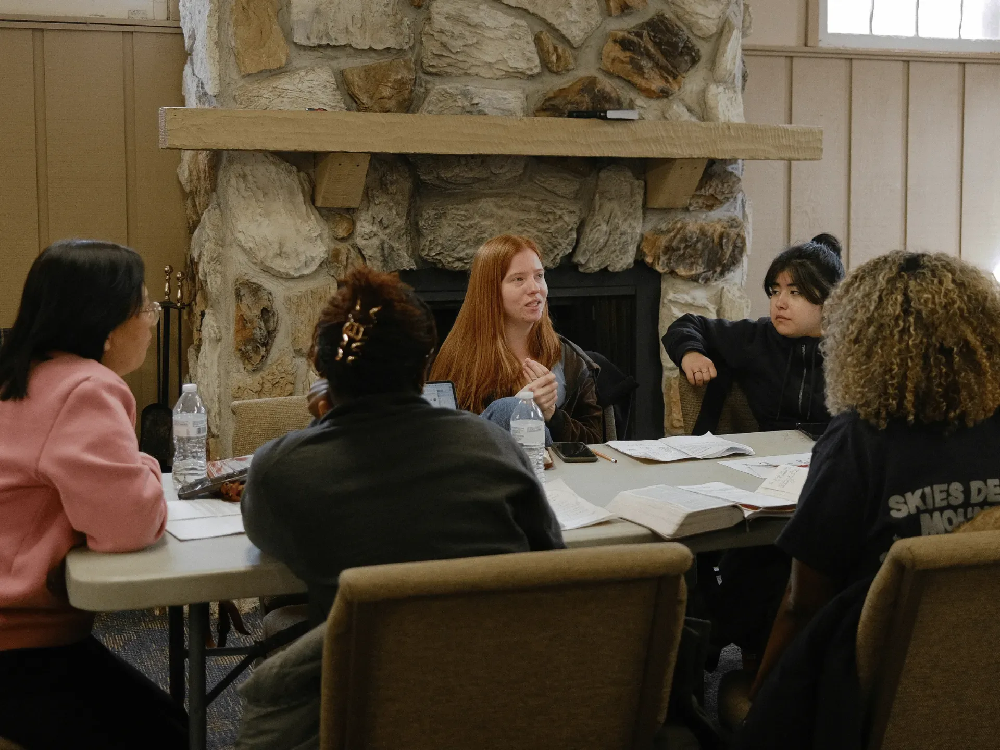

DRinC is a student organization at UIC where students explore life’s biggest questions, study the Bible together, grow deeper in their relationship with Jesus, and learn to share his love with others. All UIC students are welcome!
Join Us!
-

Bible Studies
Small group or personal Bible studies offered throughout the week: The Gospel of Mark.
-

Friday Disciples Night
Fridays, 6pm. Join us for reflection sharing, Bible study, food, and fellowship.
-

Sunday Worship Service
Sundays, 11am at Chicago UBF church.
Hear It From A Student
“When I came to Bible study and met Jesus, I learned what the truth is. I learned to live a life of purpose.”
Jorge Lau

Meet Our Student Officers
-

Theo
President
-
Hannah
Treasurer
-

Jennifer
Secretary
-
Esther
-
David
Past Activities
 2025 UIC All Campus Worship Night
2025 UIC All Campus Worship Night Bible Studies
Bible Studies 2025 UIC All Campus Worship Night
2025 UIC All Campus Worship Night Galentine day
Galentine day 2026 Easter Bible Retreat
2026 Easter Bible Retreat 2026 Easter Bible Retreat
2026 Easter Bible Retreat Graduation Party!
Graduation Party! 2026 All Campus Worship
2026 All Campus Worship